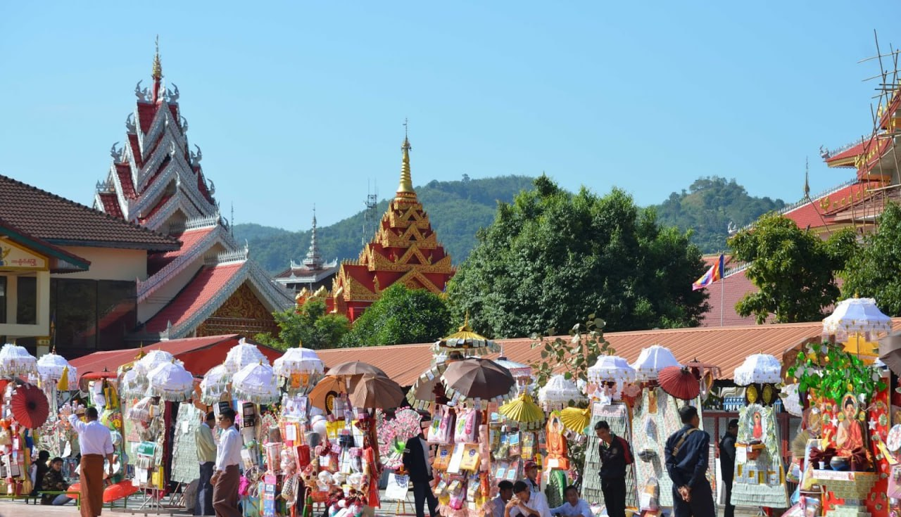

Myanmar Traditions
Myanmar Festivals
Tatkuu
Thingyan is the Myanmar New Year festival that usually occurs in middle of April. It is a Buddhist festival celebrated over a period of four to five days, culminating in the New Year. The dates of the Thingyan Festival are calculated according to the Burmese calendar. The dates of the festival are observed as public holidays throughout Myanmar, and are part of the summer holidays at the end of the school year. If you are visiting Myanmar and want to experience the magical festival of Thingyan it will be on the 13th April - 16th April Next Year.
Kasone
Kason is the second Myanmar month and comes in April-May. It ends on the eve of new year on Myanmar calendar. Myanmar new year usually falls on 17th of April on Gregorian calendar. Bo tree water festival of Kasone is celebrated on the fullmoon day of Kasone the second month on Myanmar calendar. Unlike the new year water festival it has a great religious significance. The full-moon of Kason is a day of threefold significance:- Firstly, it is the day that Buddha was born, secondly Buddha attained Enlightenment on this very day, and thirdly this is the day of his Demise.
Nayone
Nayone is the third month of the Myanmar calendar which is between May to June. Myanmar is a very heavy Buddhist country. And so being a monk, meditating, finding peace and following the ways of Buddha. On that month the either wise and old monks or new monks have a type of examination to see if they are allowed to keep following the ways of buddha. The tests are designed to provide motivation to the spiritual upliftment of Lord Buddha and one that involved recitation and written tests.
Waso
Waso, the fourth month in Myanmar calendar falls between June and July which is partially summer and partially rainy seasons. The full-moon day of Waso is very significant, because this is the day Buddha was conceived, the day that he renounced the worldly pleasure, and the very day that he preached the first sermon of Dhamma Cakka and the day that he performed the miracles of supernatural powers. The day also marks the beginning of the Buddhist lent of three months when members of Sangha go into the rains retrea. A significant and meritorious s deed of Buddhists in Waso is offering robes to members of the Sangha for use during the lent, and so these robes are called Waso robes. Moreover, there is a practice of young men and women going on outings of gathering flowers to be offered at Buddha images at pagodas and at homes.
Wakhaunge
Wakhaung festival is an annual event in Myanmar that marks the end of the rainy season and the start of the harvest season. People light up their houses, and pagodas are adorned with lanterns. The festival involves weaving robes for Buddhist monks, cultural events, and sports like boat races and traditional dances.A significant part of the Wakhaung festival is the weaving of robes for Buddhist monks, which is considered a meritorious act. People gather to watch the weaving process, which involves intricate designs and patterns.
Tawthalin
Tawthalin is the sixth month of the Burmese calendar, and it's marked by several festivals and ceremonies in Myanmar. These include the Thadingyut Festival, Phaung Daw Oo Pagoda Festival, Shwe Kyin Pagoda Festival, and Htamane Festival. These events involve paying respect to elders, making offerings to monks and nuns, traditional dances, boat races, and food fairs. Overall, Tawthalin is an exciting time in Myanmar that celebrates the end of the rainy season and the country's rich cultural heritage.
Thadingyut
Thadingyut is a festival of lights celebrated in Myanmar on the full moon day of the seventh month of the Burmese calendar. It marks the end of the Buddhist Lent period, and people light up their homes and offer gifts to monks. There are also traditional dances, music performances, and cultural activities.
Tazaungmon
Tazaungmon is the eighth month in the Burmese calendar, marking the end of the rainy season and start of harvest season. It is a significant month for Buddhists, associated with the Tazaungdaing festival of lights, weaving of robes for monks, and other cultural and religious events.
Pyatho
Pyatho is the ninth month of the Burmese calendar that falls between December and January. This month is associated with cooler weather and decreased agricultural activities. Myanmar celebrates the Ananda Pagoda festival during this month, which is one of the most significant Buddhist festivals in the country. The festival commemorates the construction of the Ananda Pagoda and attracts thousands of pilgrims from all over the country. The pagoda is decorated with lights, and offerings are made to Buddha. Pyatho is also a month for reflection and spiritual practice, with many people engaging in meditation and making offerings to monks.
eNadaw

Nadaw is the eleventh month in the Burmese calendar, typically falling between November and December. This month is significant for Buddhists in Myanmar, with several cultural and religious events taking place. The Shwezigon Pagoda Festival, celebrating one of the oldest and most revered pagodas in Myanmar, is a highlight of the month. During the festival, the pagoda is decorated with lights, and offerings are made to Buddha. Another important event is the Kathina Ceremony, which marks the end of the Buddhist Lent period and involves making offerings to monks. Nadaw is also a time for traditional music, dance performances, and other cultural activities. It is a time for families and friends to come together and celebrate, as well as a time for reflection, making offerings to Buddha and the monks, and showing devotion to one's faith.
Tabodwl
Tabodwe is an important month in the Burmese calendar, associated with the Mahamuni Pagoda Festival and other cultural and religious events. It is a time for reflection and spiritual practice, with many people engaging in meditation and making offerings to Buddha and the monks. It marks the end of the harvest season and the beginning of the dry season, with many people taking time to enjoy the cooler weather and spend time with friends and family.
eTabaung
Tabaung is the twelfth month of the Burmese calendar, falling between February and March in the Gregorian calendar. It is an important month for Buddhists in Myanmar, with several cultural and religious events taking place. The Full Moon Day of Tabaung, also known as the Tabaung Festival, is a highlight of the month, with people making offerings to Buddha and participating in cultural activities. The month is associated with the coming of spring, and many people engage in spring cleaning and decorating their homes. Overall, Tabaung is a time for celebration, community bonding, and new beginnings.
Myanmar Clothes
Clothing in Myanmar varies depending on the ethnicity, cultural traditions of the people of each region of Myanmar. The most widely recognized Myanmar national costumes are gaung baung, taikpon, pasoe for males and yinpone, htamein for females. Pasoe and htamein are combined and called longyi. Myanmar clothing also features great diversity in terms of textiles, weaves, fibers, colours and materials, including velvet, silk, lace, muslin, and cotton. Myanmar clothing also features great diversity in terms of textiles, weaves, fibers, colours and materials, including velvet, silk, cotton, lace, and muslin.
Duyindaw
Lalkatone
Mahrlatr
Gaungpaung
Makite
Sepon
Yinbone
Thaimathein
Pawar+Htabi
Taungshay
Pasoe
Tikepone
Shoe(Thayay)
Golden_feather_hintha_bird_shoes
Shoe(Kahtipr)
Myanmar Food
Myanmar food is an integral part of the Burmese way of life. The people of Myanmar love to indulge in food and spend a great many hours preparing and eating a meal, emphasizing the cooking procedure rather than ingredients, and therefore paving the way for a variety of dishes with constant improvisation. Burmese cuisine is an exotic blend of noodles, seafood, and rice, spiced up and enhanced by condiments and salads. Fruits, a feature of the tropical climate, are also an important part of this cuisine. The food has been influenced by the techniques, ingredients, and flavors of Myanmar's neighbors: Thailand, India, and China. Myanmar dishes are characterized by the extensive use of fish products, while pork, beef, and poultry are more commonly used in landlocked cities like Mandalay. The great Irrawaddy River flows through the country, which means freshwater fish is a mainstay everywhere. Every dish has at least three of the five tastes, and every meal has a host of accompaniments. The Myanmar people enjoy a wide range of salads(a thoke), usually dominated by one major ingredient which may include rice, wheat and rice noodles, glass noodles and vermicelli, potato, ginger, tomato, kaffir lime, pickled tea leaves(lahpet), and the pounded, fermented fish paste known as ngapi. Ngapi yay, eaten with fresh and boiled vegetalbe is also one of the most popular Myanmar cuisine and an essential part of Myanmar people's meals. Myanmar traditional snacks are also abundant everywhere. Most Myanmar snacks are made of rice flour, sticky rice, and sticky rice powder.
A Kyaw
Toh Buu Kyaw
Black Sticky Rice
Hta Ma Nae

Fish Misery
Fish-Rice

Gultinus Rice
Mote Kyr Si
Hrlrwr
Yo
Mote Pound
Mote Kywl Thae
Mote Hin Khar
Toh Buu Nawy

Own Kout Nyin
Mote Lin Ma Yar
Shwe Yin Aye
Htan Ngat
Myanmar Art
Myanmar (Burma) is a beautiful country with a rich cultural heritage and traditional arts. Influenced by its history and neighboring countries like India, China, and Thailand, Myanmar's culture reflects a deep imprint of Buddhism and diverse influences. While western culture has had some impact, Myanmar's traditional arts remain distinctive. Exploring Myanmar allows visitors to delve into its ancient culture, and a tour package may include experiencing the "Ten Flowers," which is a metaphorical name for a list of ten ancient Myanmar arts. These arts, such as Panbe, Panbu, Pantain, and more, have been passed down through generations.

Panbel/Black Smithing
Panbu/Sculpture

Panyun/Lacquerware
Panpoot/Turnery

Pantain/Gold or Silver Smithing
Panchi/Painting
Panyan/Masonry

Pantin/Bronze Casting

Pantaut/Stucco Work

Pantamault/Stone Carving
Myanmar Lions
Myanmar Language
Religions in Myanmar
Famous Places in Myanmar
Myanmar Clothes
Myanmar Food
Myanmar Art
Culture
&
Traditions